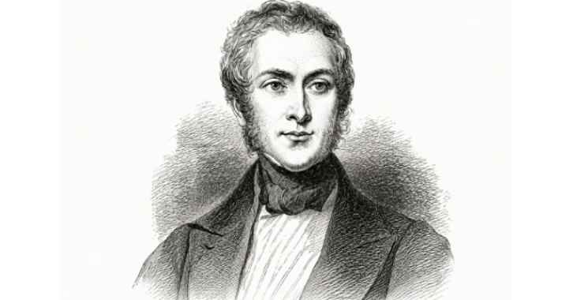
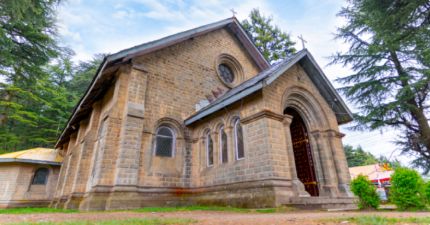

Spread across five hills and rooted in the mid-1850s, Dalhousie has spent more than 170 years watching the Himalayas change around it. For a small town, that is a long memory. One minute, you are standing beside a pine-scented lane; the next, you are imagining British officers, hill villagers, and freedom-era footsteps passing through the same quiet slopes. Dalhousie is a layered story of the ancient Chamba region, the British Raj, India’s freedom struggle, and the tourism boom that followed Independence.
In this blog, we will peel back those layers one by one, in a way that is simple, engaging, and useful, so you walk away with both the history of Dalhousie and the bigger picture behind this charming hill station today.
Before Dalhousie Came into Existence
We can’t understand the history of Dalhousie if we don’t know how it was before the British came along. Let’s understand the pre-colonial Dalhousie:
The Ancient Landscape of the Ravi Valley
Dalhousie sits in the upper Ravi Valley, spread across five hills named Kathlog, Potreyn, Tehra/Moti Tibba, Bakrota, and Balun. If you had seen this place before the 2nd century BCE, it was just a dense forest of pine, oak, and deodar trees, but it secretly helped the kingdom of Chamba from getting conquered.
If we speak geographically, it mattered more. The rivers Ravi, Beas, and Chenab all passed through this belt, and from the higher regions like Dainkund Peak, you could see the multiple rivers converging in the distance.
Life Under the Chamba Kingdom
Then came a Rajput chieftain, Raja Maru, from Kalpagrama, and ruled for roughly 3-4 centuries. After him came the ruler of the dynasty, Meru Verman, who expanded the kingdom’s reach and commissioned temple architecture. Many temples of this time, such as the Lakshana Devi, Ganesh, and Narasimha temples, are among the earliest surviving post-Gupta temples in the entire Himalayan region.
The next big shift came in 920 AD when Raja Sahil Varman decided that the old capital at Bharmaur was to be shifted to the lower Ravi Valley. He built a town here and named it Champavati after his daughter, which afterwards changed to “Chamba.”
67 rulers and Chamba managed nearly unbroken continuity for close to a thousand years without being conquered until 1846, when the British came.
Why the British Chose Dalhousie
Now this may sound dramatic, but the British came to the hilly regions of North India to save their life. During the Cholera epidemic of 1817-1821, there was a devastating effect on the population, and people were dying and getting sick. This was when the mix of medical observation and racial discrimination brought them to the conclusion that diseases like Cholera, typhoid, Hepatitis, and malaria were lurking in the heat and humidity of Indian plains.
British officials built retreats in the high-altitude regions of India. They were deliberate recreations of England with Gothic churches, Tudor bungalows, Malls for promenading, clubs, golf courses, racecourses, and botanical gardens to make them feel at home.
They ended up in Dalhousie after the Anglo-Sikh war (19th century), when Punjab came under British rule, and the administration was to be managed there. Now they had to escape the summer heat of Lahore and Amritsar. Lieutenant Colonel Napier identified a stretch of five forested hills that were accessible from Punjab. It then got its name, Dalhousie, after Lord Dalhousie.
The British Raj & Foundation of Dalhousie

This is how the history of Dalhousie evolved over the years:
1852: Imperial Distractions
The Second Anglo-Burmese War begins, keeping Governor-General Lord Dalhousie occupied with military and administrative expansions.
1853: The Land Deal
The British conclude a land acquisition agreement with the Raja of Chamba.
1854: Official Establishment
Dalhousie is formally established. British construction begins, starting with a military sanatorium for recovering troops.
Sir Donald McLeod suggests naming the station after the current Governor-General.
1861: Administrative Attachment
Dalhousie is administratively attached to the Gurdaspur district in Punjab.
1867: Sanatorium Town Status
The town receives formal recognition as a “Sanatorium town,” securing development resources that accelerate the construction of churches, bungalows, and missionary schools.
1905: The Regional Shift
The devastating Kangra earthquake hits the region.
This ends British considerations of using nearby Dharamshala as a main regional base.
Shimla is the premier summer capital, and leaving Dalhousie as a quieter retreat.
Colonial Architecture That Still Defines Dalhousie
Colonial architecture is still praised for its beauty and the fact that they are still standing gracefully.
| Category | Key Features | Architecture |
|---|---|---|
| Churches | St. John’s, St. Francis, St. Patrick’s & St. Andrew’s. | Gothic Revival; stone walls, pointed arches, stained glass, timber interiors. |
| Colonial Bungalows | British officers’ residences. | English country-style; wooden facades, sloping tin roofs, large windows. |
| Missionary Schools | Sacred Heart Convent School, Dalhousie Public School. | Colonial institutional buildings with stone masonry and pitched roofs. |
| Mall Roads & Promenades | Potreyn Mall, Moti Tibba Mall, Garam Sadak, Thandi Sadak, Upper Bakrota Mall | Colonial hill-station planning with curved pedestrian avenues. |
| Clubs & Heritage Estates | Dalhousie Club, Jandrighat Palace. | Scottish-inspired colonial design alongside traditional Chamba architecture. |
| Military & Healthcare Sites | Military Sanatorium, Baloon Cantonment | Functional colonial military architecture with stone structures |

Modern Tourism
Today, Dalhousie functions as both a destination in its own and a gateway into the Chamba district. It has Kajjiar, which is famously known as “mini-Switzerland,” the temple town of Chamba, and increasingly popular trekking routes. Although the town still has the colonial bones, they are with the addition of natural Panchpula, Satdhara falls, historic museums, Kalatop Wildlife Sanctuary, and Tibetan Markets.
Conclusion
As you dig deep, you will find many other stories and elements in this beautiful town, and when you ask locals about it, you will be left with life memories. We would suggest that you start planning your trip to this town to live through the untold history of Dalhousie.
One more thing, when you are planning to come here, the stay should reflect the same, and eco hospitality is best at it. We have two scenic properties in Dalhousie: Hotel Snow Castle, and SS Resorts, both distinctively good at providing hospitality like no other in the region. Plan a trip and book your stay!